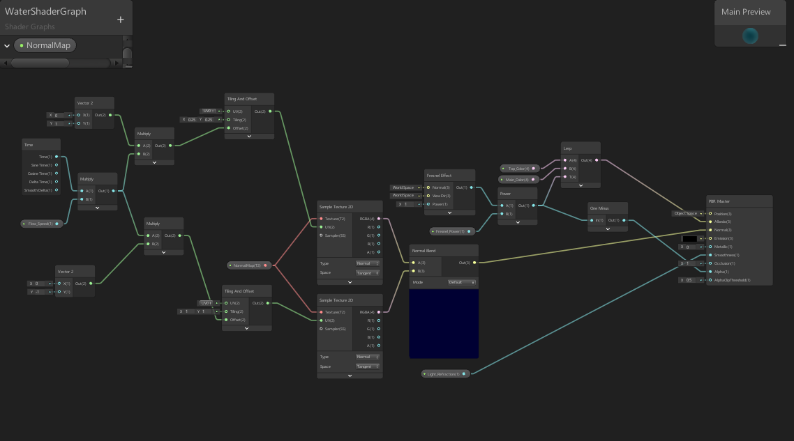
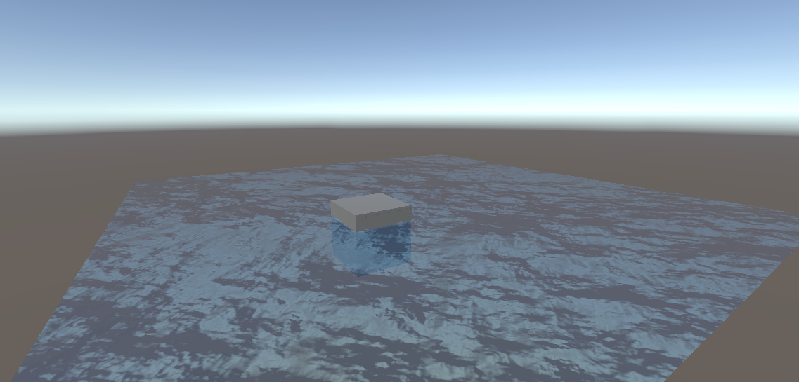
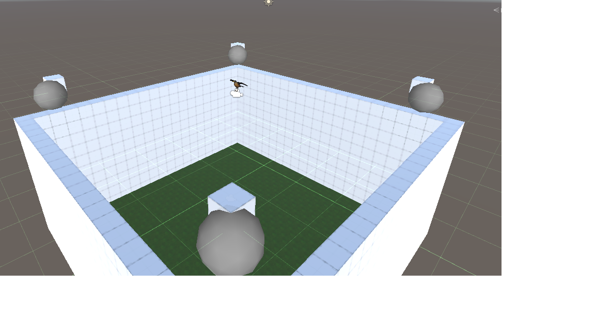
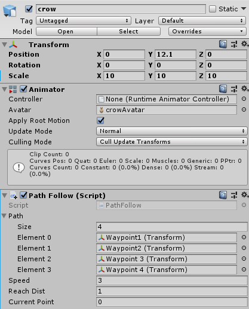

This portfolio contains all my personal documentation from the development of Skin, the intent of this document is to convey that I understand crucial aspects of software development.
TECHNICAL
Water Shader Graph
The first addition I added to Skin was a Water Shader Graph. This allows for the implementation of water within the Unity engine.
Water Shader Graph Tutorial
Using the referenced video above, I created a water shader graph for Skin which requires:
- Lightweight Render Pipeline
- Waterbump Texture Map
- Shader Graph
- Water Shader Graph Texture (applied to plane)
NOTE: Simplest way to acquire a Waterbump Texture Map is by acquiring one off the internet, a simple google search will bring up multiple choices.
Once all components are created place a plane asset into the enviroment and apply the shader graph to it, Once applied the configuration options will become available to adjust the water textures behaviours like colors and the speed at which the texture pans across the plane, this emulates the behaviour of a current or flowing water.


Issues: Due to Skin using the HDRP (High Definition Render Pipeline) there is a rendering issue with the water as it is effected by some form of culling based on player location. This does not occur when the LWRP (Light Weight Render Pipeline) however as concluded by my own testing and consultation by previous Skin developer, Jordan Dargaville.
AI Path Following
One of the core game mechanics is the ability to posses animals. One of the animals you can posses is a bird, and will be
able to recon the surrounding area a bird is patrolling via the perspective of the bird.

This was implemented was via a path following script that was attached to the bird entity. This script also renders waypoints that can be place and arranged manually
to create a fixed repeating flight path for the bird to follow, this will allow visibility of the surrounding area.

Reflection
Personal Statement
PROFESSIONAL
Personal Statement